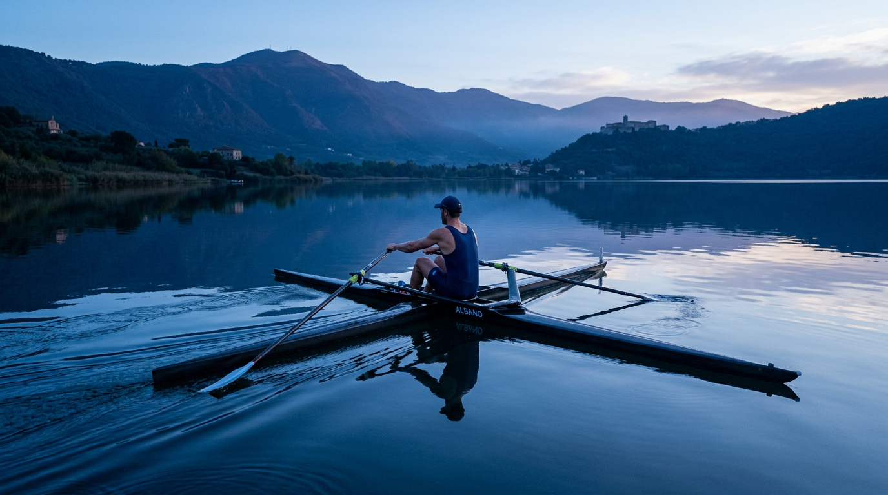

Il cratere che si è riempito d'acqua.
Il Lago Albano è il lago vulcanico più profondo del Lazio: 168 metri di acqua nell'imbuto di due crateri fusi. Un viaggio nei 600.000 anni della caldera dei Colli Albani, dagli scoppi mesolitici all'emissario romano ancora in funzione.

La caldera dei Colli Albani
La caldera del Vulcano Laziale ha un diametro di circa 10 chilometri e si estende dalla Via Appia fino a Rocca di Papa. La sua attività iniziò circa 600.000 anni fa e si concluse — con eruzioni residuali — intorno al 5.000 a.C., in epoca mesolitica. Le due bocche più recenti si aprirono nella zona del lago Albano e del lago di Nemi, e i due crateri, riempitisi d'acqua, formarono i laghi che vediamo oggi ([Parco dei Castelli Romani](https://www.parcocastelliromani.it/s/content/92003020580/1664528508.885)).
Il Lago Albano nacque dall'unione di due crateri: si osserva ancora la forma ellittica dello specchio d'acqua, con l'asse maggiore di 3,5 chilometri e il minore di 2,3. La profondità massima è di 168 metri, il perimetro di 10 chilometri, la superficie di 6 chilometri quadrati ([Wikipedia — Lago Albano](https://it.wikipedia.org/wiki/Lago_Albano)). L'assenza di immissari superficiali è dovuta alla geologia del cratere: l'acqua viene interamente dalle piogge, dalle falde e dalle sorgenti sotterranee.
L'emissario romano — 398 a.C.
Nel 398–397 a.C., mentre Roma assediava Veio, il livello del Lago Albano salì oltremisura. Gli aruspici etruschi predissero che Veio sarebbe caduta solo quando le acque del lago fossero state fatte defluire. I Romani scavarono nel peperino una galleria artificiale lunga circa 1.450 metri, che dalla riva sud-orientale porta l'acqua fino alla località Le Mole. La camera di manovra, in grandi blocchi di peperino, è ancora visibile e visitabile su prenotazione lungo il periplo ([Italia.it](https://www.italia.it/it/lazio/roma/parco-dei-castelli-romani/lago-di-albano); [Wikipedia — Lago Albano](https://it.wikipedia.org/wiki/Lago_Albano)).
L'emissario è considerato uno dei capolavori dell'ingegneria idraulica antica: 2.400 anni dopo, ancora funzionante nella struttura originale. È il più antico esempio di regolazione artificiale di un lago in Europa.

Il campo di regata delle Olimpiadi 1960.
Alle Olimpiadi di Roma del 1960 il Lago Albano ospitò le gare di canottaggio e canoa. Il campo di regata olimpico è ancora oggi utilizzato dal Circolo Vela Castel Gandolfo e dal Circolo Canottieri, oltre che per gli allenamenti delle nazionali. Le boe originali, ancorate a più di 20 metri di profondità, sono ancora al loro posto sotto la superficie.
Il monitoraggio moderno
Il livello del lago è sceso di circa cinque metri tra gli anni Sessanta e il 2014, tornando ai valori attuali con il ripristino idrogeologico. La spiaggia si è allungata fino a 120 metri in più a fine 2025. Dal settembre 2023 la Regione Lazio ha installato un teleidrometro per il monitoraggio in tempo reale ([Wikipedia — Lago Albano](https://it.wikipedia.org/wiki/Lago_Albano)).
La qualità delle acque è monitorata da Arpa Lazio su tre punti di prelievo, con 7 analisi stagionali. Nel 2025, due punti (aree boschive sotto Albano e sotto Marino) sono stati classificati "eccellenti" e uno "buono" ([Il Caffè TV](https://ilcaffe.tv/articolo/222848/lago-albano-la-stagione-balneare-parte-bene-acqua-eccellente)). Nel Lazio, il 91% delle acque di balneazione è classificato "eccellente" ([Arpa Lazio](https://www.arpalazio.it/news/-/asset_publisher/HGkuYUQGGDZL/blog/id/412057)).
Fauna e archeologia sommersa
Nel lago vivono carpe, tinche, persici, coregoni e anguille. La navigazione a motore è vietata (salvo deroghe per pescatori professionisti, regate e sci nautico in aree delimitate) ([Regolamento navigazione — Città metropolitana di Roma](https://static.cittametropolitanaroma.it/uploads/Allegato-P72-20.pdf)). Sott'acqua, a pochi metri di profondità sulla riva orientale, si trova il Villaggio delle Macine, un insediamento palafitticolo del XX–XIX secolo a.C., riscoperto nel 1984 e visitabile con guide subacquee.
Il lago Albano è dunque anche un archivio: ha visto passare i Romani che ne regolarono il livello, i Papi che lo affacciarono dai loro giardini, i canottieri olimpici del 1960, e prima di tutti gli abitanti dell'antichissima Alba Longa — la città madre di Roma, secondo la leggenda.
Vieni a vederlo.
Il giro del lago è un anello di 10 chilometri, il battello elettrico Falco lo attraversa in un'ora. Le spiagge attrezzate aprono dall'1 maggio al 30 settembre.